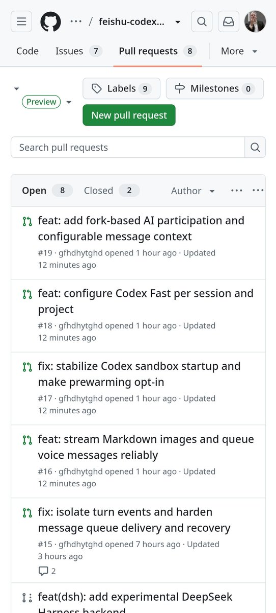

讲一下这个里面最核心的两个pr，他们把codex遥控器变成了codex工作伙伴
第一个，从 @memoh_ai 抄来的，discuss模式，由模型自主判断是否需要回复，但我进行了一些优化，我的版本会在一轮对话结束后，fork当前对话，在独立会话中判断是否需要回复，如果为是，则交由主会话回复，期间新消息依旧由fork判断是否需要插入，这里的关键是主会话上下文不受干扰，fork会话上下文缓存复用。
第二个，受 @evermind 启发，独立消息简史系统，由一个5.6luna模型维护一个持续更新的消息简史，并在主模型收到请求时先找出可能相关的对话历史，主模型保留搜索全部聊天记录的能力
第一个，从 @memoh_ai 抄来的，discuss模式，由模型自主判断是否需要回复，但我进行了一些优化，我的版本会在一轮对话结束后，fork当前对话，在独立会话中判断是否需要回复，如果为是，则交由主会话回复，期间新消息依旧由fork判断是否需要插入，这里的关键是主会话上下文不受干扰，fork会话上下文缓存复用。
第二个，受 @evermind 启发，独立消息简史系统，由一个5.6luna模型维护一个持续更新的消息简史，并在主模型收到请求时先找出可能相关的对话历史，主模型保留搜索全部聊天记录的能力
